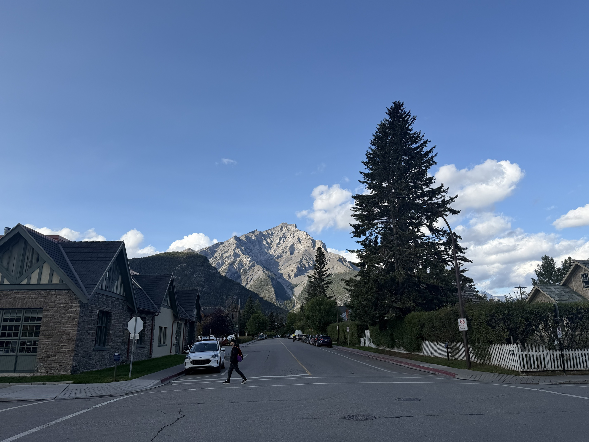

Cascade Mountain · Banff Avenue · reference scale bench
Banff Scale Bench
The left frame is your original photo, read at 1600 : 1 against your height. The right frame is the same scene re-scaled so the mountain stands 5000× you. Your pixel height never changes. The world does. Scroll either frame; the other follows.
1600 : 1ORIGINAL
peak rise ≈ 2 880 m above street
5000 : 1MAGNIFIED 3.125×
peak rise ≈ 9 000 m above street

How the two frames are built
A ratio like 1600 : 1 is a statement about the scene, not the file: the mountain's rise above the street is 1600 of your body lengths. To go to 5000 : 1 you have two choices, and they are the same picture. Shrink you, or grow the world. This tool grows the world, because you cannot shrink a pixel.
magnification = 5000 / 1600 = 3.125
right frame = left frame × 3.125, you held constant
1 body length = (peak rise in px) / 1600 → well under one screen pixel
tick spacing = 500 body lengths = same px in both frames
The ruler is anchored where the rock face meets the town's treeline, and its ticks are in multiples of you. In the left frame the peak lands on the 1600 tick. In the right frame the same peak, in the same photo, lands on the comparison tick. That is the whole demonstration: identical ruler, larger world.
The peak and base positions are read off the photo by eye, so the metre figures are indicative. Cascade Mountain's true summit is 2 998 m and Banff townsite sits near 1 383 m, so the real rise above the street is roughly 1 615 m, which is about 900 of a 1.8 m person, not 1600. Set the height box to whatever you actually measure and the table re-computes.
What those heights mean in the real world
| Reference | Metres | × you |
|---|